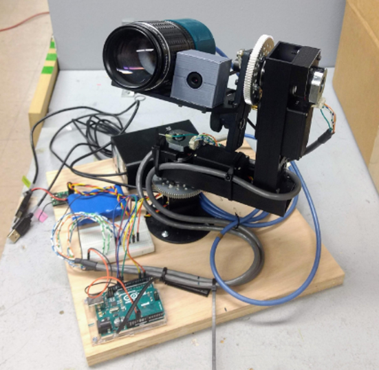
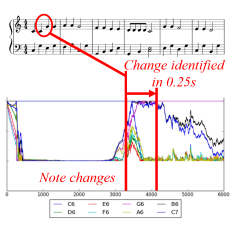
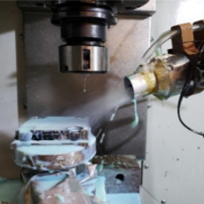
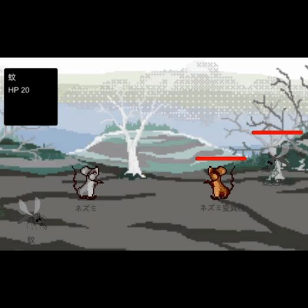
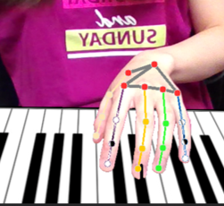
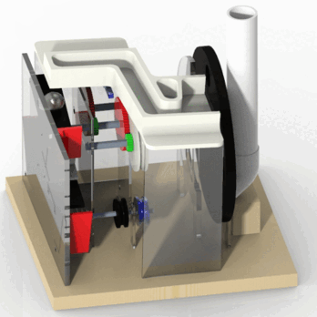

Miscllaneous ProjectsHere are some of my unpublished projects, mostly from my undergrad and master's. |
|
 |
Senior Capstone Project: Transient Object Spectrometer
University of Illinois at Urbana-Champaign, 2019 project report / video
Mechatronic system that detect, track, and collect spectral data from moving, light-emitting
objects in the night sky. |
|
 |
Identification of Musical Note Played on Piano via Feedback Particle Filter
University of Illinois at Urbana-Champaign, 2019 project report
Real-time identification of a note played on a piano with a probabilistic approach using
a feedback particle filtering algorithm. |
|
 |
Investigating the Effects of ACF Spray Angle and Distance on its Performance for Micro-Drilling
University of Illinois at Urbana-Champaign, 2019 project report
Investigation of atomization-based cutting fluid spray condition to maximize tool life
for deep micro-drilling. Automatic drill parameter measurements from microscope images
using keypoint detection. |
|
 |
Retro-Style Simulation RPG in Unity
current progress / video
In progress retro-style simulaiton RPG in Unity. |
|
 |
AR Piano Playing Using Real-Time Hand Tracking
Stanford University, 2022 project report
AR piano using real-time hand keypoint tracking from RGB webcam stream. |

|
Conun-Drum Bot: A Drum-Playing Humanoid Simulator
Stanford University, 2022 project report / video
Drum-player humanoid simulator that playes the beats speficied by a user. |
|
 |
Mechanical Design Projects
University of Illinois at Urbana-Champaign, 2018-2019
A vegetable slicer operating from single crank input,
quadruped walking robot, and steel ball transporter mechanism. |
|
Website template borrowed from here |